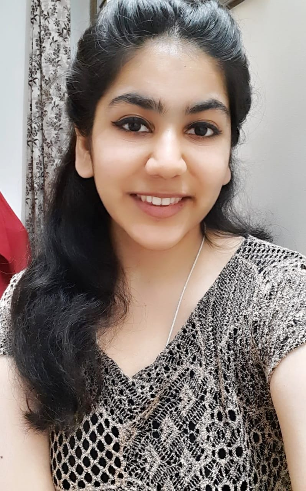
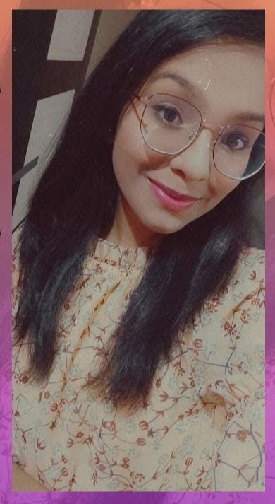

APARNA GOSAIN
"The difference between who you are and what you want to be is what you do."
Meet Ms Aparna Gosain, an adventurist from the capital city of New Delhi who
has always been ready to make the most of every opportunity that knocks her door.
She is an avid debator, orator, extemporist and a keen Munner. Having participated
in various MUNs, debate, extempore and declamation competitions over the years, she
firmly believes that co-curricular activities help an individual to shape their
character in various ways. She is of the opinion that learning is all that matters
at the end; you can always make the impossible possible by working for it.
Meet Ms Anshika Bansal, a student from capital city of New Delhi who is a
Self Taught Artist and Sketcher. She thinks that art is a way of
seeing ourselves-a way of seeing our inner world, our thoughts, our beliefs,
our feelings and emotions and loves and aversions. Having participated and
winning several art competitions since childhood, she believes experiencing
awareness of our thoughts over and over can lead to big changes, both in our
art and in our lives. Letting them on a piece of paper gives an extraordinary feel.

ANSHIKA BANSAL